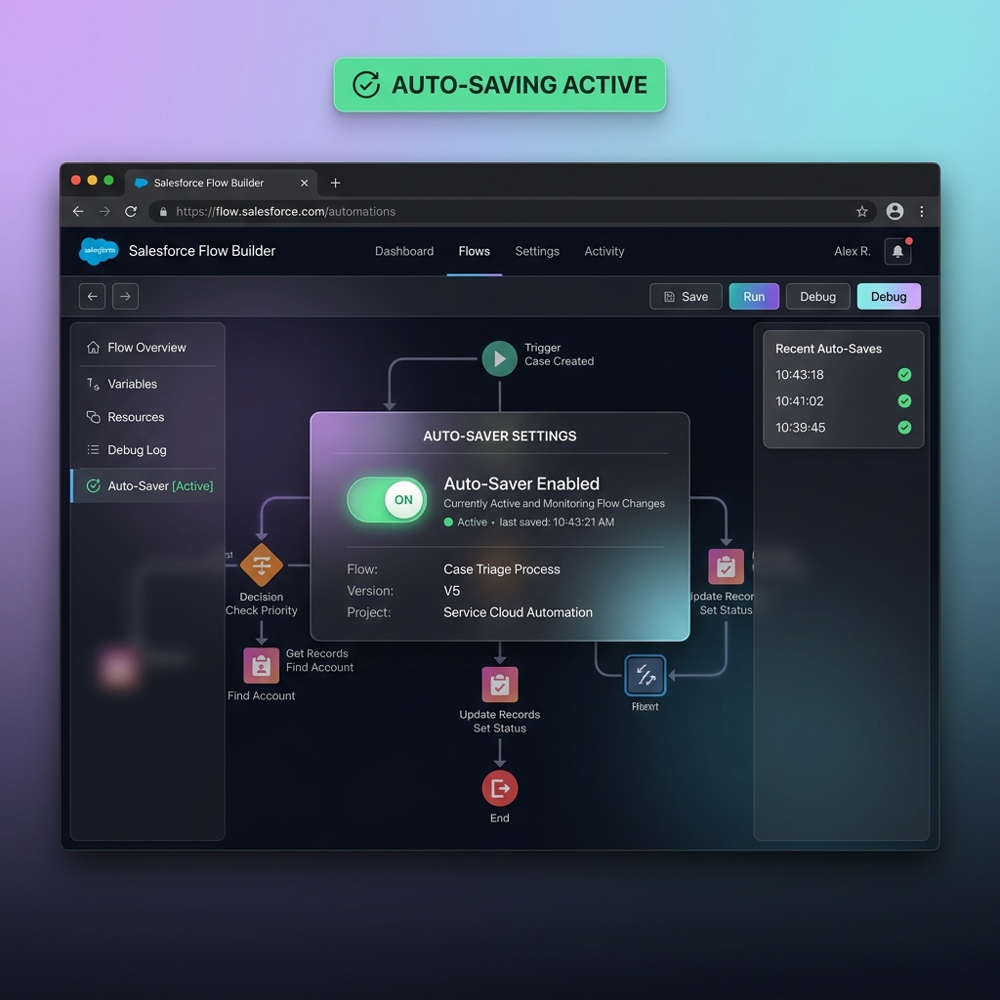

Automate Your Saves,
Preserve Your Flow
A lightweight, smart Chrome Extension (Manifest V3) designed to auto-save Salesforce Flows. Never lose your building progress again.

Built with Developers & Admins in Mind
Smart auto-saving that respects Salesforce Flow Builder states, modulations, and complex configuration modes.
Smart Auto-Saving
Periodically checks the status of the Salesforce Flow Builder save button and automatically triggers a save whenever changes are detected.
Smart Save Deferral
Automatically detects open side configuration panels or layout edit modals to prevent Salesforce from assigning default API names during editing.
Active Version Protection
Identifies active flows and prompts you with clear desktop/browser toast notifications to save as a new version, rather than failing on write-protected versions.
Dev-Friendly Shortcut
Equipped with a built-in reload shortcut (Ctrl + Shift + E). Seamlessly reload the extension workspace inside your Chrome development instance.
Visual Save Rules Simulator
Select a Salesforce flow builder state below to test how our smart auto-save rules adapt dynamically to keep your flow safe.
Flow Builder States
Auto-Save Action Clicked!
Standard auto-saving triggers. The extension clicks the Save button for you.
A new flow is created, and the builder senses a change. The Save button is active, allowing automated trigger clicks to persist content.
Development Roadmap
Track completed capabilities and our future pipeline for Salesforce Flow productivity tools.
Auto-Saving Flow Builder
Automated periodic evaluation of save triggers, background extension reloads, and state logic check blocks.
Dark Mode for Flows
Complete UI inject stylesheets to transform Salesforce Flow Builder canvas into a beautiful dark mode theme.
Quick Resource & Element Search
Quick finder utilities (Ctrl + K) to search and zoom into flow elements, variables, templates, or resources.
Unused Resource Highlighting
Natively supported by Salesforce in the Winter '27 release.
Privacy-First Extension
Salesforce Flow Auto-Saver does not collect, store, or transmit any user data. All processing occurs locally on your machine within Chrome's isolated environment. No remote servers or tracking pixels are included.
Read Full Privacy Policy